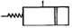
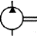
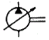

지게차운전기능사 (2006-01-22 기출문제)
1. 디젤기관의 순환운동 순서로 가장 적합한 것은?
- 공기압축→공기흡입→가스폭발→배기→점화
- 연료흡입→연료분사→공기압축→연소배기→ 착화연소
- 공기흡입→공기압축→연소배기→연료분사→ 착화연소
- 공기흡입→공기압축→연료분사→착화연소→ 배기
(정답률: 69%)

2. 건설기계 기관에서 크랭크축(crank shaft)의 구성 부품이 아닌 것은?
- 크랭크 암(crank arm)
- 크랭크 핀(crank pin)
- 저널(journal)
- 플라이 휠(fly wheel)
(정답률: 64%)
3. 디젤기관에서 타이머의 역할로 가장 적당한 것은?
- 분사량 조절
- 자동변속 조절
- 분사시기 조절
- 기관속도 조절
(정답률: 76%)
4. 엔진 윤활유에 대하여 설명 한 것 중 틀린 것은?
- 온도에 의하여 점도가 변하지 않아야 한다.
- 유막이 끊어지지 않아야 한다.
- 인화점이 낮은 것이 좋다.
- 응고점이 낮은 것이 좋다.
(정답률: 70%)
5. 기관 작동 중 라디에이터 캡 쪽으로 물이 상승하면서 연소가스가 누출될 때 원인으로 맞는 것은?
- 실린더 헤드의 균열이 생겼다.
- 분사노즐의 동와셔가 불량하다.
- 물 펌프에 누설이 생겼다.
- 라디에이터 캡이 불량하다.
(정답률: 49%)
6. 기관 부품 중 터보차저란?
- 실린더 내에 공기를 압축 공급하는 장치이다.
- 냉각수 유량을 조절하는 장치이다.
- 기관 회전수를 조절하는 장치이다.
- 윤활유 온도를 조절하는 장치이다.
(정답률: 65%)
7. 디젤기관 과열원인이 아닌 것은?
- 경유에 불순물이 혼입되어 있을 때
- 라디에이터 코어가 막혔을 때
- 물 펌프의 벨트가 느슨해졌을 때
- 정온기가 닫힌 채 고장이 났을 때
(정답률: 44%)
8. 윤활방식 중 오일펌프로 급유하는 방식은?
- 비산식
- 압송식
- 분사식
- 비산분무식
(정답률: 72%)
9. 작업현장에서 드럼 통으로 연료를 운반했을 경우 올바른 주유 방법은?
- 연료가 도착하면 즉시 주입한다.
- 수분이 있는가를 확인 후 즉시 주입한다.
- 불순물을 침전시킨 후 침전물이 혼합되지 않도록 주입한다.
- 불순물의 침전시켜서 모두 주입한다.
(정답률: 84%)
10. 다음 중 피스톤 링의 절개부 간극이 가장 큰 것은?
- 1번 링
- 2번 링
- 3번 링
- 4번 링
(정답률: 42%)
11. 디젤기관에서 시동이 되지 않는 원인으로 가장 알맞은 것은?
- 연료공급 펌프의 연료공급 압력이 높다.
- 가속페달을 깊숙이 밟고 시동하였다.
- 시동시 크랭크축 회전속도가 너무 느리다.
- 디젤 연료의 착화점이 낮다.
(정답률: 42%)
12. 같은 축전지 2개를 직렬로 접속하면 어떻게 되는 가?
- 전압은 2배가되고 용량은 같다.
- 전압은 같고 용량은 2배가된다.
- 전압과 용량은 변화 없다.
- 전압과 용량 모두 2배가된다.
(정답률: 70%)
13. 축전지를 병렬로 연결하였을 때 맞는 것은?
- 전압이 증가한다.
- 전압이 감소한다.
- 전류가 증가한다.
- 전류가 감소한다.
(정답률: 63%)
14. 교류 발전기(alternator)의 특징이 아닌 것은?
- 소형. 경량이다
- 출력이 크고 고속회전에 잘 견딘다.
- 불꽃 발생으로 인한 소음이 크다.
- 컷 아웃릴레이 및 전류제한기를 필요로 하지 않는다.
(정답률: 52%)
15. AC 발전기에서 작동 중 소음 발생의 원인으로 가장 거리가 먼 것은?
- 베어링이 손상되었다.
- 벨트 장력이 약하다.
- 고정 볼트가 풀렸다.
- 축전지가 방전되었다.
(정답률: 73%)
16. 세미실드빔 형식을 사용하는 건설기계 장비에서 전조등이 점등되지 않을 때 가장 올바른 조치방법은?
- 렌즈를 교환한다.
- 전조등을 교환한다.
- 반사경을 교환한다.
- 전구를 교환한다.
(정답률: 60%)
17. 퓨즈에 대한 설명 중 틀린 것은?
- 퓨즈 회로에 흐르는 전류 크기에 따르는 용량의 것을 쓴다.
- 퓨즈는 스타팅 모터의 회로에는 쓰이지 않는다.
- 퓨즈는 철사로 대용하여도 된다.
- 퓨즈는 표면이 산화되면 끊어지기 쉽다.
(정답률: 80%)
18. 굴삭기 추진축의 스플라인부가 마모되었을 때 두드러지게 나타나는 현상은?
- 신축 작용시 추진축이 구부러진다.
- 주행 중 소음을 내고 추진축이 진동한다.
- 차동기어의 물림이 불량하게 된다.
- 미끄럼현상이 일어난다.
(정답률: 59%)
19. 지게차의 구조 중 틀린 것은?
- 마스트
- 밸런스 웨이트
- 틸트 레버
- 레킹 볼
(정답률: 71%)
20. 타이어식 장비에서 캠버가 틀어졌을 때 가장 거리가 먼 것은?
- 핸들의 쏠림 발생
- 로어 암 휨 발생
- 타이어 트레드의 편마모 발생
- 휠얼라인먼트 점검 필요
(정답률: 48%)
21. 스크레이퍼 굴착 작업시 견인력을 증가시키기 위해 밀어주는 작업은?
- 드로잉 작업
- 트레인 작업
- 푸싱 작업
- 풀링 작업
(정답률: 66%)
22. 무한궤도식 건설기계에서 전부 유동륜의 역할 중 맞는 것은?
- 트랙의 진행방향을 유도한다.
- 트랙을 구동시킨다.
- 롤러를 구동시킨다.
- 제동작용을 한다.
(정답률: 52%)
23. 무한궤도식 굴삭기의 주행방법 중 틀린 것은?
- 가능하면 평탄한 길을 택하여 주행한다.
- 요철이 심한 곳에서는 엔진 회전수를 높여 통과한다.
- 돌이 주행모터에 부딪치지 않도록 한다.
- 연약한 땅은 피해서 간다.
(정답률: 77%)
24. 기중 작업에 물체가 무거울수록 붐 길이와 각도는 어떻게 하는 것이 좋은가?
- 붐 길이는 길게, 각도는 크게
- 붐 길이는 짧게, 각도는 그대로
- 붐 길이는 짧게, 각도는 작게
- 붐 길이는 짧게, 각도는 크게
(정답률: 45%)
25. 지게차 조종레버의 설명으로 틀린 것은?
- 로우어링(lowering)
- 덤핑(dumping)
- 리프팅(lifting)
- 틸팅(tilting)
(정답률: 59%)
26. 유성기어 장치의 주요 부품은?
- 유성기어, 베벨기어, 선기어
- 선기어, 클러치기어, 헬리컬기어
- 유성기어, 베벨기어, 클러치기어
- 선기어, 유성기어, 링기어, 유성캐리어
(정답률: 50%)
27. 건설기계 조종사가 시.도지사에게 신상 변경신고를 하여야 하는 경우는?
- 근무처의 변경
- 서울특별시 구역 안에서의 주소의 변경
- 부산광역시 구역 안에서의 주소의 변경
- 성명의 변경
(정답률: 56%)
28. 안전지대라 함은?
- 버스정류장 표지가 있는 장소
- 자동차가 주차할 수 있도록 설치된 장소
- 도로를 횡단하는 보행자나 통행하는 차마의 안전을 위하여 안전표지 등으로 표시된 도로의 부분
- 사고가 잦은 장소에 보행자의 안전을 위하여 설치한 장소
(정답률: 68%)
29. 다음 중 도로교통법상 술에 취한 상태의 기준은?(관련 규정 개정전 문제로 여기서는 기존 정답인 1번을 누르면 정답 처리됩니다. 자세한 내용은 해설을 참고하세요.)
- 혈중 알코올 농도가 0.⑤%이상
- 혈중 알코올 농도가 0.1%이상
- 혈중 알코올 농도가 0.15%이상
- 혈중 알코올 농도가 0.2%이상
(정답률: 78%)
30. 등록사항의 변경 또는 등록이전신고 대상이 아닌 것은?
- 소유자 변경
- 소유자의 주소변경
- 건설기계 소재지 변동
- 건설기계의 사용본거지 변경
(정답률: 40%)
31. 주.정차를 할 수 있는 곳은?
- 도로의 우측 가장자리
- 도로의 모퉁이
- 교차로의 가장자리
- 횡단보도 옆
(정답률: 79%)
32. 일시정지하지 않고도 철길건널목을 통과할 수 있는 경우는?
- 차단기가 올려져 있을 때
- 경보기가 울리지 않을 때
- 앞차가 진행하고 있을 때
- 신호등이 진행신호 표시일 때
(정답률: 75%)
33. 건설기계의 검사를 연장 받을 수 있는 기간을 잘못 설명한 것은?
- 해외임대를 위하여 일시 반출된 경우 : 반출 기간 이내
- 압류된 건설기계의 경우 : 압류기간 이내
- 건설기계 대여업을 휴지 하는 경우 : 휴지기 간 이내
- 사고발생으로 장기간 수리가 필요한 경우 : 소유자가 원하는 기간
(정답률: 68%)
34. 교통사고를 야기한 도주차량 신고로 인한 벌점 상계에 대한 특혜점수는?
- 40점
- 특혜점수 없음
- 30점
- 120점
(정답률: 49%)
35. 유압펌프의 종류가 아닌 것은?
- 기어펌프
- 진공펌프
- 베인펌프
- 피스톤펌프
(정답률: 50%)
36. 가변용량 유압펌프의 기호는?



(정답률: 59%)
37. 밀폐된 용기 내의 일부에 가해진 압력은 어떻게 전달되는가?
- 유체 각 부분에 다르게 전달된다.
- 유체 각 부분에 동시에 같은 크기로 전달된 다.
- 유체의 압력이 돌출부분에서 더 세게 작용된다.
- 유체의 압력이 홈 부분에서 더 세게 작용된다.
(정답률: 65%)
38. 유압탱크의 구비조건이 아닌 것은?
- 적당한 크기의 주유구 및 스트레이너를 설치한다.
- 드레인(배출밸브) 및 유면계를 설치한다.
- 오일에 이물질이 혼입되지 않도록 밀폐되어야 한다.
- 오일 냉각을 위한 쿨러를 설치한다.
(정답률: 55%)
39. 호이스트형 유압호스 연결부분에 가장 많이 사용하는 것은?
- 엘보 조인트
- 니플 조인트
- 소켓 조인트
- 유니언 조인트
(정답률: 55%)
40. 다음에서 가장 높은 압력을 발생시키는 유압펌프의 형식은?
- 기어펌프
- 베인펌프
- 나사펌프
- 피스톤펌프
(정답률: 63%)
41. 압력제어 밸브는 어느 위치에서 작동하는가?
- 탱크와 펌프
- 펌프와 방향전환 밸브
- 방향전환 밸브와 실린더
- 실린더 내부
(정답률: 46%)
42. 오일의 압력이 낮아지는 원인이 아닌 것은?
- 오일펌프의 마모
- 오일의 점도가 높을 때
- 오일의 점도가 낮아졌을 때
- 계통 내에서 누설이 있을 때
(정답률: 61%)
43. 회로 내 유체의 흐르는 방향을 조절하는데 쓰이는 밸브는?
- 압력제어밸브
- 유량제어밸브
- 방향제어밸브
- 유압 액츄에이터
(정답률: 71%)
44. 유압 액츄에이터(작업장치)를 교환하였을 경우 반드시 해야 할 작업이 아닌 것은?
- 오일교환
- 공기빼기 작업
- 뉴유 점검
- 공회전 작업
(정답률: 40%)
45. 유압유 취급에 대한 설명으로 틀린 것은?
- 오일의 선택은 운전자가 경험에 따라 임의 선택한다.
- 유량은 알맞게 하고 부족시 보충한다.
- 오염, 노화된 오일은 교환한다.
- 먼지, 모래, 수분에 의한 오염방지 대책을 세운다.
(정답률: 85%)
46. 유압펌프의 압력조절밸브 스프링 장력이 높은 것을 사용하면 나타나는 현상으로 가장 적절한 것은?
- 유압이 높아진다.
- 유압이 낮아진다.
- 토출량이 증가한다.
- 토출량이 감소한다.
(정답률: 57%)
47. 렌치 작업시의 주의사항 설명 중 틀린 것은?
- 너트보다 큰 치수를 사용한다.
- 너트에 렌치를 깊이 물린다.
- 높거나 좁은 장소에서는 몸을 안전하게하고 작업한다.
- 렌치를 해머로 두드려서는 안 된다.
(정답률: 78%)
48. 벨트 취급에 대한 안전 사항 중 틀린 것은?
- 벨트 교환시 회전을 완전히 멈춘 상태에서 한다.
- 벨트의 회전을 정지할 때 손으로 잡고서 한다.
- 벨트의 적당한 장력을 유지하도록 한다.
- 벨트에 기름이 묻지 않도록 한다.
(정답률: 85%)
49. 전기작업에서 안전작업에 적합치 않은 것은?
- 저압전기는 안심하고 작업할 것
- 퓨즈는 규정된 알맞은 것을 끼울 것
- 전선이나 코드의 접속부는 절연물로서 완전히 피복하여 둘 것
- 스위치 조작은 항상 오른손으로 할 것
(정답률: 73%)
50. 스패너 작업시 유의할 점이다. 틀린 것은?
- 스패너의 입이 너트의 치수에 맞는 것을 사용해야 한다.
- 스패너 자루에 파이프를 이어서 사용해서는 안 된다.
- 스패너와 너트 사이에는 쐐기를 넣고 사용하는 것이 편리하다.
- 너트에 스패너를 길이 물리고 조금씩 앞으로 당기는 식으로 풀고 조인다.
(정답률: 79%)
51. 건설기계 작업시 주의사항으로 틀린 것은?
- 운전석을 떠날 경우에는 기관을 정지한다.
- 주행시 작업장치는 진행방향으로 한다.
- 주행시 가능한 평탄한 지면으로 주행한다.
- 후진시는 후진 후 사람 및 장애물 등을 확인 한다.
(정답률: 68%)
52. 연소의 3요소에 해당되지 않는 것은?
- 물
- 공기
- 불
- 가연물
(정답률: 71%)
53. 폭발의 우려가 있는 가스 또는 분진을 발생하는 장소에서 지켜야 할 일에 속하지 않는 것은?
- 화기의 사용금지
- 인화성 물질 사용금지
- 점화의 원인이 될 수 있는 기계 사용금지
- 불연성 재료의 사용금지
(정답률: 76%)
54. 산, 알칼리 소화기는 어떤 화재에 가장 적합한 가?
- A급 화재
- B급 화재
- C급 화재
- D급 화재
(정답률: 34%)
55. 다음 그림의 안전표지판이 나타내는 것은?
- 비상구
- 출입금지
- 인화성물질 경고
- 보안경 착용
(정답률: 88%)
56. 브레이크에 페이드 현상이 일어났을 때의 조치 방법으로 적절한 것은?
- 브레이크를 자주 밟아 열을 발생시킨다.
- 속도를 조금 올려준다.
- 작동을 멈추고 열이 식도록 한다.
- 주차 브레이크를 대신 사용한다.
(정답률: 79%)
57. 22.9kV 가공 배전선로에 관한 사항이다. 맞는 것은?
- 높은 전압일수록 전주 상단에 설치되어 있다.
- 낮은 전압일수록 전주 상단에 설치되어 있다.
- 전압에 관계없이 장소마다 다르다.
- 배전선로는 전부 절연전선이다.
(정답률: 63%)
58. 도로 굴착자가 굴착 공사 전에 이행할 사항에 대한 설명으로 옳지 않은 것은?
- 도면에 표시된 가스 배관과 기타 저장물 매설 유무를 조사하여야 한다.
- 조사된 자료로 시험 굴착 위치 및 굴착 개소 등을 정하여 가스 배관 매설 위치를 확인하여야 한다.
- 위치 표시용 페인트와 표지판 및 황색 깃발 등을 준비하여야 한다.
- 소속회사의 안전관리자와 일정을 협의하여 시험 굴착계획을 수립하여야 한다.
(정답률: 50%)
59. 도시가스 사업법에서 고압이라 함은 압축가스일 경우 최소 몇 MPa 이상의 압력을 말하는가?
- 1MPa
- 10MPa
- 5MPa
- 3MPa
(정답률: 44%)
60. 한전에서는 송전 선로의 고장발생 예방 및 고장 개소의 신속한 발견을 위하여 고장신고 제도를 운영하며 신고한 자에게는 일정한 사례금을 지급하고 있다. 다음 중 신고와 거리가 먼 것은?
- 한전에서 고장 개소를 발견하지 못한 상태에 서 신고자가 고장 개소를 발견하고 즉시 신고를 하는 경우 (고장신고)
- 전기 설비로 인한 인축 사고의 발생이 우려되는 사항의 신고 (예방신고)
- 한전에서 설비 상태의 확인을 요청한 경우 (확인신고)
- 고장 개소를 발견하고 하루 뒤에 신고한 경우 (지연신고)
(정답률: 67%)